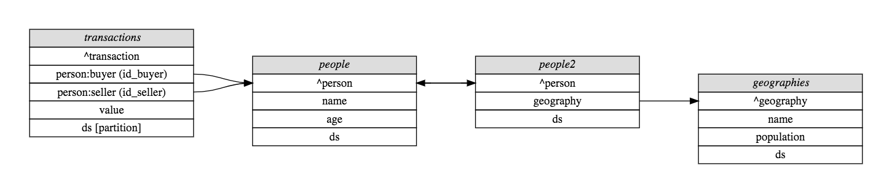

Quickstart
Warning
This resource is in draft status, and missing essential pieces of information, such as outputs of the various examples. This will be remedied once output data types are finalised. The exact API used below is subject to change as the project matures, but the ideas and generic grammar is unlikely to vary. Note also that we do not discuss metrics yet as that API has yet to solidify.
If you have not read the concepts documentation, and find any of the following unclear, be sure to go and read this documentation. If this resource remains unclear, that is no doubt the fault of the author, and you should feel free to reach out by creating a GitHub issue.
In the following, we will explore the use of Mensor in a toy example backed by pandas data frames. All of the code shown on this page can be run equally well in your own Python session if you would like to play with it locally. Note that Mensor is agnostic as to where data is stored, so nothing changes in this API for data stored in database tables.
Toy Data Schema
The following examples of using mensor will use the following toy schema, which does a reasonable job of demonstrating most of mensor's features.

For the purposes of this tutorial, we will back this schema with pandas dataframes loaded from CSV files, but as far as mensor is concerned, the source of the data is irrelevant. The following Python code sets up a MetaMeasureProvider which connects to data following the above schema. It is possible to easily set up configuration from YAML files, but we defer such consideration to the as-yet TBD deployment documentation.
import os
from mensor.measures import MetaMeasureProvider
from mensor.backends.pandas import PandasMeasureProvider
registry = MetaMeasureProvider()
data_dir = "<path to checked out Mensor repository>/tests/data"
people = (
PandasMeasureProvider(
name='people',
data=os.path.join(data_dir, 'people.csv')
)
.add_identifier('person', expr='id', role='primary')
.add_dimension('name')
.add_measure('age')
.add_partition('ds')
)
registry.register(people)
people2 = (
PandasMeasureProvider(
name='people2',
data=os.path.join(data_dir, 'people.csv')
)
.add_identifier('person', expr='id', role='unique')
.add_identifier('geography', expr='id_geography', role='foreign')
.add_partition('ds')
)
registry.register(people2)
geographies = (
PandasMeasureProvider(
name='geographies',
data=os.path.join(data_dir, 'geographies.csv')
)
.add_identifier('geography', expr='id_geography', role='primary')
.add_dimension('name')
.add_measure('population')
.add_partition('ds')
)
registry.register(geographies)
transactions = (
PandasMeasureProvider(
name='transactions',
data=os.path.join(data_dir, 'transactions.csv')
)
.add_identifier('transaction', expr='id', role='primary')
.add_identifier('person:buyer', expr='id_buyer', role='foreign')
.add_identifier('person:seller', expr='id_seller', role='foreign')
.add_measure('value')
.add_partition('ds', requires_constraint=True)
)
registry.register(transactions)
The role of MeasureProviders
In the above code, we registered several MeasureProvider instances with
a MetaMeasureProvider instance. Each MeasureProvider has the
responsibility of being able to provide everything it promised upon request, and
we can test this for any particular MeasureProvider directly. For
example, we can ask the transactions measure provider for the sum
over all transactions of their value segmented by seller id where the ds is
'2018-01-01':
transactions.evaluate(
unit_type='transaction',
measures=['value'],
segment_by=['person:seller'],
where={'ds': '2018-01-01'}
)
The returned data is a Pandas Dataframe subclass which knows how to keep track of statistics.
Todo
This documentation is incomplete on this point, and will be extended once this component of mensor solidifies.
Evaluating measures from the MetaMeasureProvider
While it is nice that you can directly evaluate measure from a single
MeasureProvider, we have not really gained much over just
directly accessing the data. Suppose, however, we wish to segment the
transaction value measure by sellers' names. Now we need information from
multiple providers, and this starts to be a little more taxing if we directly
access the data. In Mensor, however, it is as simple as:
registry.evaluate(
unit_type='transaction',
measures=['value'],
segment_by=['person:seller/name'],
where={'ds': '2018-01-01'}
)
In the background, mensor is separately asking the transactions and people
data sources for data, and stitching them together for you.
Note
For some backends, such as SQL, dragging down the data locally and doing the
joins in memory would be horrendously inefficient. To cater for this use case,
MeasureProviders have a notion of an "intermediate representation"
which they can share with other measure providers that they know to be
compatible with themselves. Unless you are deploying Mensor, and need to be
aware of such things, this is an implementation detail that is transparent
to the user.
Likewise, one might be interested in segmenting the value of transactions and the seller's age by the name of the geography of the seller and the buyer's name (admittedly a very contrived example):
registry.evaluate(
unit_type='transaction',
measures=['value', 'person:seller/age'],
segment_by=['person:buyer/name', 'person:seller/geography/name'],
where={'ds': '2018-01-01'}
)
Note that mensor also automatically stitched together providers which had the same primary key ("person") in this case.
So far, we have only considered the unit type of 'transaction', but it is also possible to consider other unit types.
What if we want the distribution of transaction values across sellers, segmented by seller name?
registry.evaluate(
unit_type='person:seller',
measures=['transaction/value'],
segment_by=['person:seller/name']
)
Note the magic that just occurred there. There is no foreign key from
person:seller to transaction, but there is a foreign key from transaction to
person:seller. Mensor took advantage of this to re-aggregate transactions by
person:seller and the join the resulting sum as a feature of person:seller.
Also note that you cannot do the following (because it does not make sense):
registry.evaluate(
unit_type='person:seller',
measures=['transaction/value'],
segment_by=['transaction/person:buyer/name']
)
This is because it violates the explicit indivisible unit of the analysis
(person:seller); i.e. a seller may have multiple transactions with different
buyers, and so segmenting by any feature of transaction (or its derivatives)
would violate the assumption that person:seller is the indivisible unit.
As such, mensor prevents you from making a statistical faux pas.
Constraints
There are three principle ways that constraints can be applied, and a rich syntax for specifying the exact contraints.
The constraint application methods are:
- scoped: This is the most explicit constraint application method, and allows you to define the constraints that must be enforced even if it is the only reason for accessing a particular measure provider. For example, for unit type transaction: {'person:seller/name': "Matthew"} would restrict transactions to those whose sellers' name was "Matthew", regardless of which measures and segmentations were provided.
- generic: This is the most lenient constraint, that only applies if the nominated feature appears in the measure provider being evaluated; but is otherwise silently ignored. Note that it applies generically and so will match any measure provider with the nominated field name. For example: {'*/name': 'Matthew'} will filter down to results that have 'name' equal to 'Matthew' for any measure provider that has the field 'name', but is otherwise not enforced.
- generic for a given unit_type:
This is a cross between the above to methods, which allows a constraint to
be enforced whenever a given unit type is being considered, at which point
it is enforced and if the unit_type lacks that feature, an error is thrown.
For example: {'*/person:seller/name': 'Matthew'} will enforce that
name == 'Matthew'every time the current unit type isperson:seller, but is otherwise ignored.
(Mostly) irrespective of the application method, constraints can be specified in a rich variety of ways. The possible constraint types are:
- equality:
{'ds': '2018-01-01'}implies[ ds=='2018-01-01']. - inequality:
{'ds': ('<', '2018-01-01')}implies[ ds<'2018-01-01' ]. The supported operations are:['<', '>', '<=', '>=']. - in:
{'ds': {1,2,3}}implies[ ds ∈ {1, 2, 3} ] - and:
A dictionary or list of dictionaries creates and AND condition, for example:
[{'ds': '2018-01-01', 'name': 'Matthew'}, {'other': 1}]implies:[ ds=='2018-01-01' & name=='Matthew' & other==1 ] - or:
A tuple of dictionaries implies an OR condition:
({'ds': '2018-01-01'}, {'other': 1})implies:( ds=='2018-01-01' | other==1) - and (nested):
{'field': [('>', 1), ('<', 2)]}implies[ field>1 & field<2 ]
The types can be nested also, for example:
[({'a': 1, 'b':2}, {'c':3, 'd':4}), ({'e': 5, 'f':6}, {'g':7, 'h':8})]
implies
[ ( [ a==1 & b==2 ] | [ c==3 & d==4 ] ) & ( [ e==5 & f==6 ] | [ g==7 & h==8 ] ) ].
Additionally, it is possible to have constraints at different levels in the join
hierarchy (for scoped constraints). For example:
({'transaction/value': 100}, {'transaction/person:seller/name': 'Matthew'})
implies
( transaction/value==100 | transaction/person:seller/name=='Matthew' ).